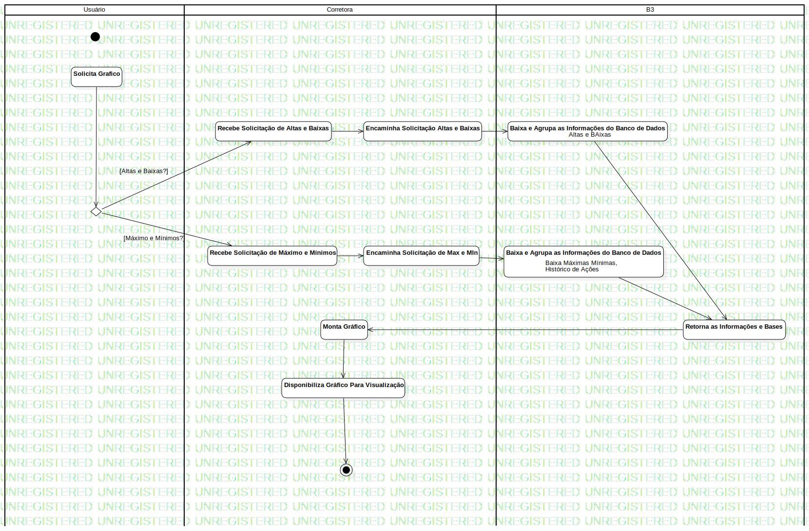

Activity1
UMLActivity
Untitled
::
Model1
::
Graficos e Visualizações
::
Activity1
Description
none
Diagrams

Graficos_Atividade
Groups
Usuário
Corretora
B3
Nodes
InitialNode1
MergeNode1
Baixa e Agrupa as Informações do Banco de Dados
Monta Gráfico
ActivityFinalNode1
Edges
(Solicita Grafico→DecisionNode1)
[Altas e Baixas?] (DecisionNode1→Recebe Solicitação de Altas e Baixas)
[Máximo e Mínimos?] (DecisionNode1→Recebe Solicitação de Máximo e Mínimos)
(Recebe Solicitação de Altas e Baixas→Encaminha Solicitação Altas e Baixas)
(Recebe Solicitação de Máximo e Mínimos→Encaminha Solicitação Altas e Baixas)
(Encaminha Solicitação Altas e Baixas→DecisionNode2)
(DecisionNode1→Solicita Historico)
(Recebe Solicitação de Máximo e Mínimos→Encaminha Solicitação de Max e MIn)
(Encaminha Solicitação Altas e Baixas→Baixa e Agrupa as Informações do Banco de Dados)
(Encaminha Solicitação de Max e MIn→Baixa e Agrupa as Informações do Banco de Dados)
(Baixa e Agrupa as Informações do Banco de Dados→Retorna as Informações e Bases)
(Baixa e Agrupa as Informações do Banco de Dados→Retorna as Informações e Bases)
(Retorna as Informações e Bases→Monta Gráfico)
(Monta Gráfico→Disponibiliza Gráfico Para Visualização)
(Disponibiliza Gráfico Para Visualização→ActivityFinalNode1)
Properties
Name
Value
name
Activity1
stereotype
null
visibility
public
isReentrant
true
isReadOnly
false
isSingleExecution
false
Owned Elements
Graficos_Atividade